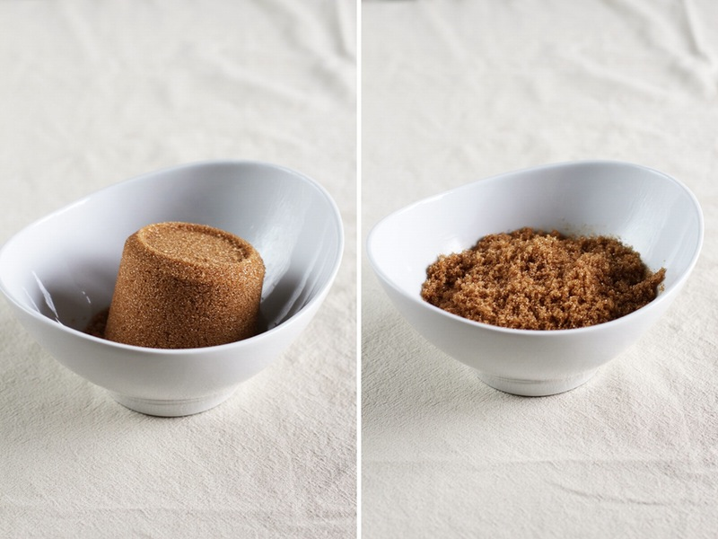

Hack 1: How to Rehydrate Your Brown Sugar
Throw your tub of brown sugar into the microwave alongside a glad of water. This will help rehydrate it and bring it back to life. Another tip, add an apple slice or an orange peel in with your brown sugar to help maintain its moisture when storing.
Hack 2: Cover Food with a Shower Cap
Remove and replace plastic wrap, just use a shower cap to cover your food. It’s a nice hassle-free way to access food with ease, while still providing protection from bugs and debris.It turns out that they do a pretty good job of covering food as well.
Hack 3: Preserve your Herbs
Fresh herbs are absolutely delicious. However, using them all before they go bad can be fairly tricky. You can eliminate this issue in a very simple way by freezing them in either water or olive oil. They will stay fresher longer and they will still remain easy to access.
Hack 4: Test An Egg Freshness
A good way to tell a good egg from a bad egg is to submerge them in water. A fresh egg will sink to the bottom and a rotten egg will float. As eggs age, their liquidous inside begins to evaporate through the shell. This is what allows for a bad egg to float. The closer to the surface, the rottener the egg is.